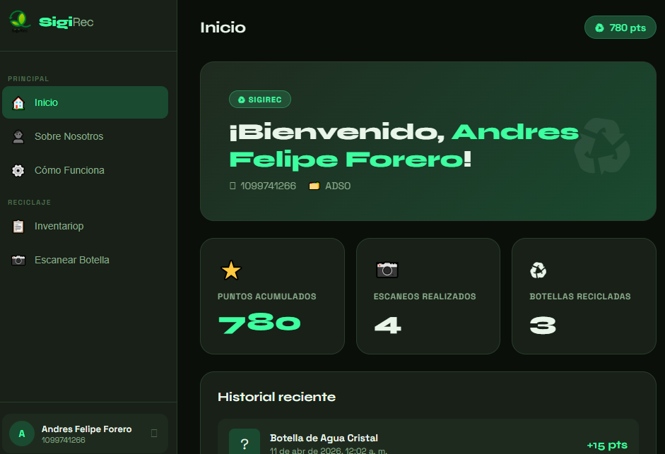
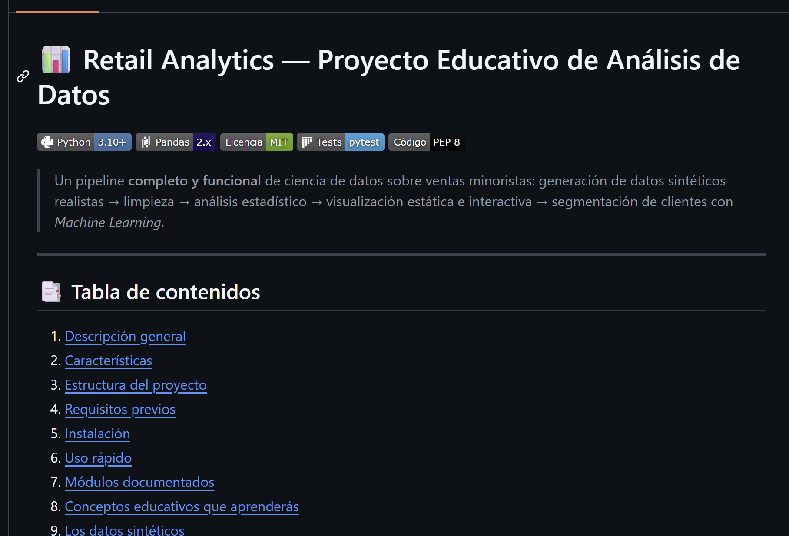
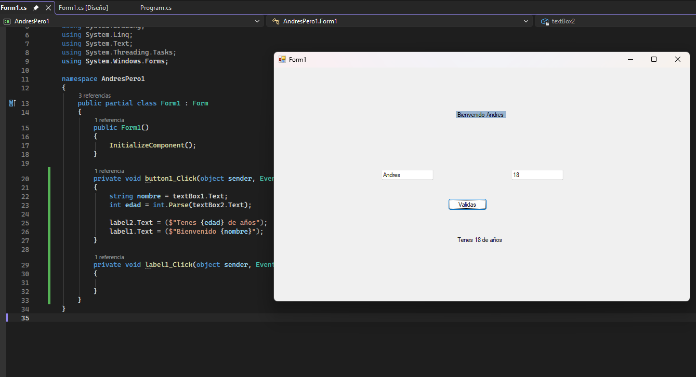
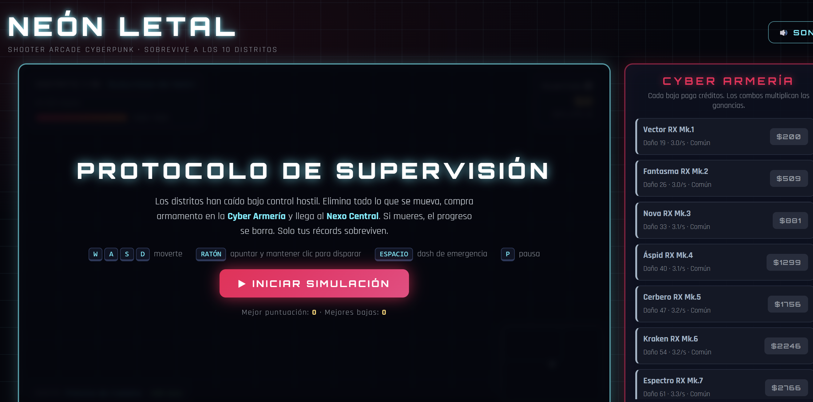
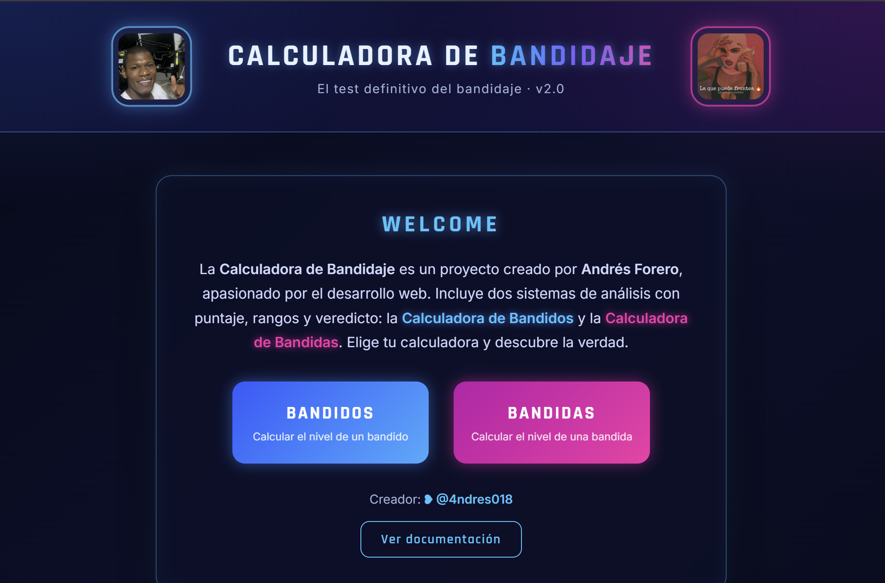
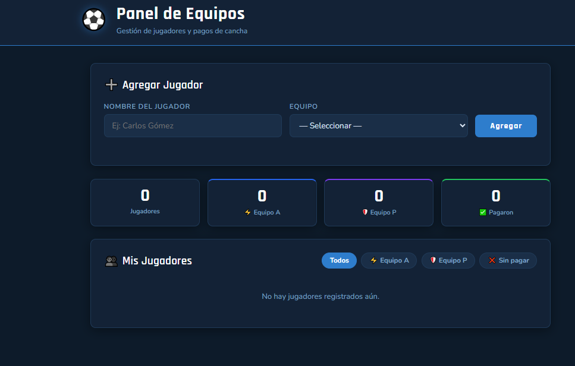
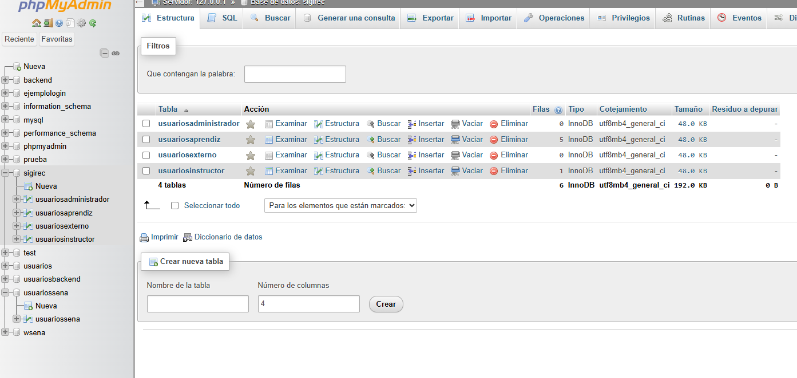
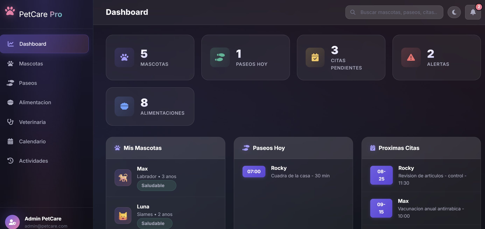
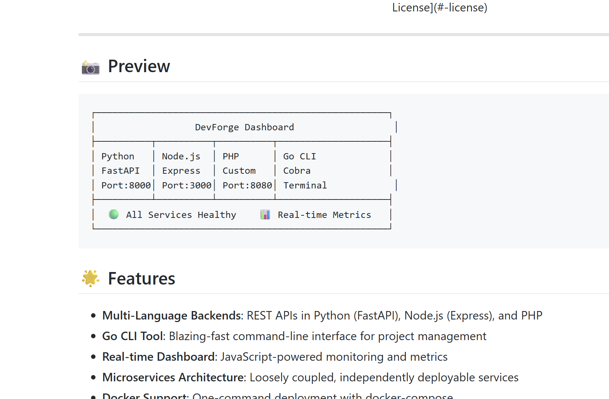
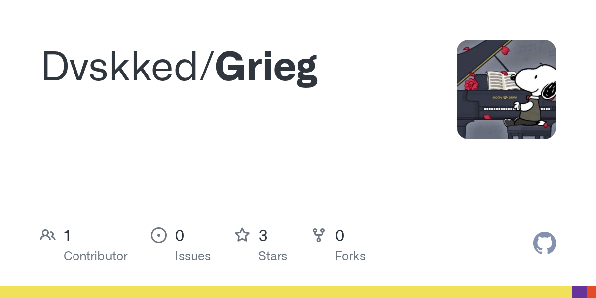

Atlas
Sistema inteligente de reciclaje que combina visión por computador e IA para identificar materiales y apoyar la gestión de puntos.
Hola, soy Andres. Estudiante de desarrollo de software enfocado en construir productos digitales útiles, interfaces claras y soluciones bien estructuradas.
UN POCO SOBRE MÍ
Me interesa el desarrollo de software como una forma de convertir ideas y necesidades reales en herramientas funcionales. Disfruto trabajar tanto en la experiencia de usuario como en la lógica que hace que un producto funcione.
He participado en espacios de formación y competencias técnicas, incluyendo procesos relacionados con WorldSkills y muestras de proyectos a nivel regional y nacional. Actualmente continúo fortaleciendo mis conocimientos y experiencia.
02 / TRABAJO SELECCIONADO
Una selección de desarrollos y experimentos que reflejan mi proceso de aprendizaje.

Sistema inteligente de reciclaje que combina visión por computador e IA para identificar materiales y apoyar la gestión de puntos.

Flujo de análisis de datos: preparación, exploración, visualización y segmentación de clientes con técnicas de machine learning.

Repositorio de aprendizaje práctico de SQL y PostgreSQL, desde consultas fundamentales hasta funciones, triggers y optimización.

Shooter arcade top-down para navegador, con escenarios, mecánicas de juego y efectos desarrollados con APIs web nativas.



Sistema de inventario y ventas con estructura MVC, punto de venta, reportes y controles de seguridad.

Aplicación de gestión para el cuidado de mascotas, con módulos de seguimiento, calendario y organización de actividades.

Plataforma de productividad para desarrollo con servicios y herramientas construidas en distintos lenguajes.


Analizador de metadatos con enfoque en análisis y procesamiento con Python.
FORMACIÓN Y EXPERIENCIA
Estudiante universitario. Formación continua en fundamentos y prácticas de desarrollo de software.
En cursoExperiencia formativa como aprendiz, con bases en programación, lógica, desarrollo web y construcción de soluciones. El proceso no fue culminado.
Formación previaParticipación en espacios y competencias técnicas regionales y nacionales, con exposiciones de proyectos en Santander y Pereira.
Experiencia formativaHTML · CSS · JavaScript · TypeScript · PHP · Python · PostgreSQL · análisis de datos
04 / TECNOLOGÍAS
HTML5 · CSS3 · JavaScript · TypeScript
Python · PHP · Node.js
MySQL · PostgreSQL · Pandas
Git · Docker · Electron
05 / CONTACTO
Estoy abierto a conversar sobre proyectos, colaboración y oportunidades para seguir creciendo.